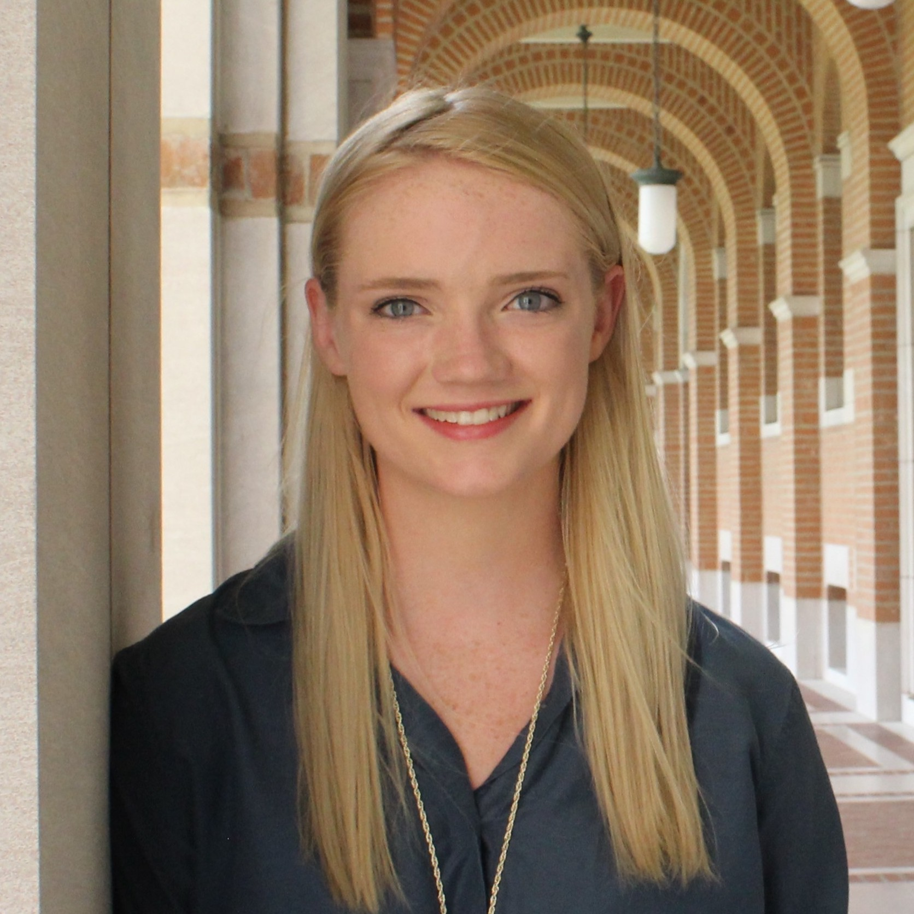
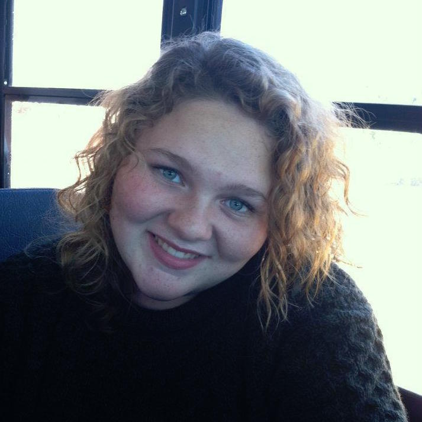
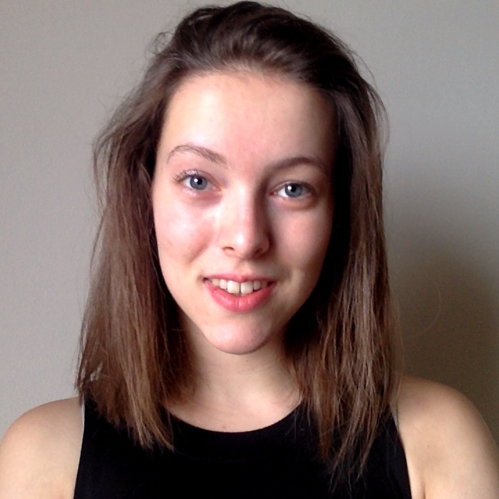
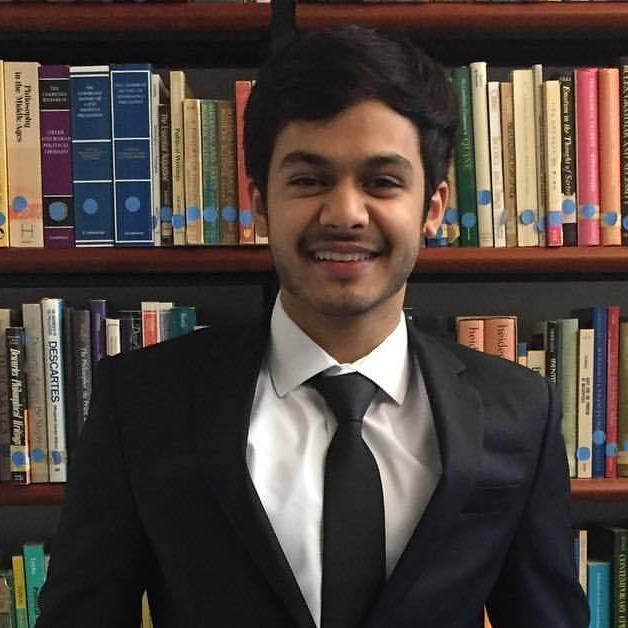
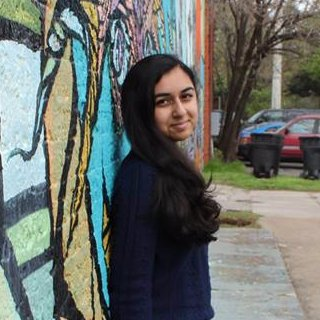
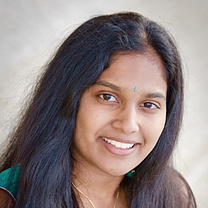
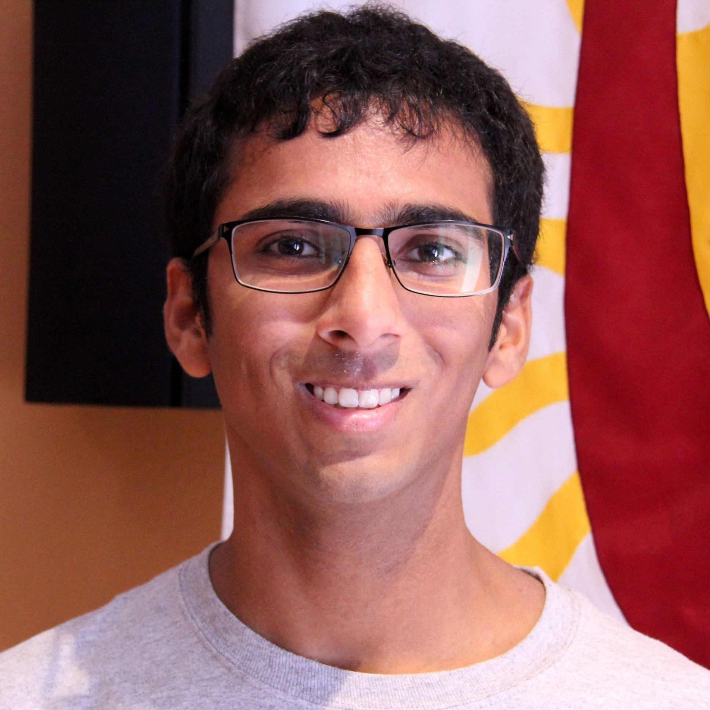
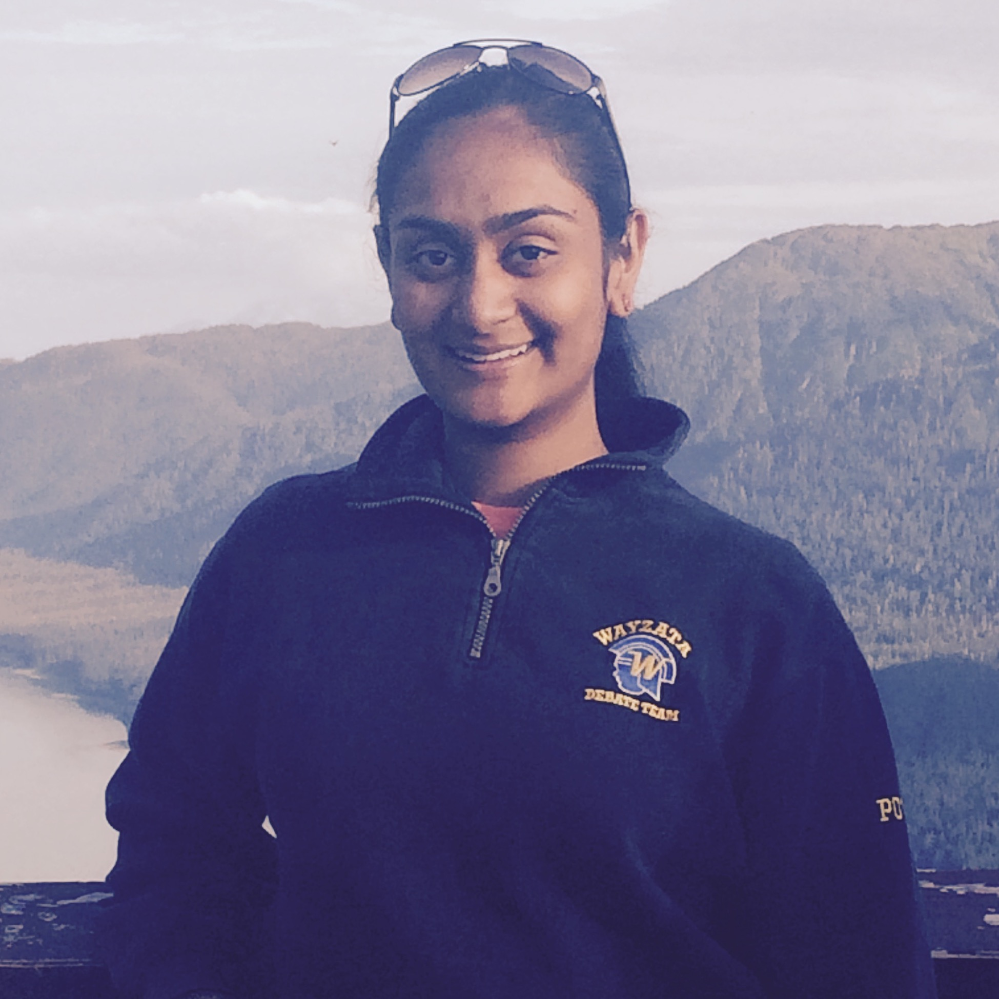

Sierra Cowan, President Baker College '18 Biochemistry and Cell Biology

My name is Sierra Cowan and I am the 2017-2018 President! I am a senior from Baker College majoring in Biochemistry and Cell Biology and minoring in Neuroscience (Humanities and Social Sciences track). When I’m not doing all things MedHum or slaving my life away in my lab at Baylor, I like to browse french bulldog Instagram accounts, lift weights, eat my weight in ice cream, watch Spurs games, and listen to T. Swift albums on repeat. My favorite things about MedHum are coffee chats, Julia Chavez, and all of the opportunities I get to hear various perspectives about medicine and healthcare. I am so excited to lead the club this upcoming year and can’t wait to see how much more we grow on and off the Rice campus.
Miriam Shayeb, External Vice President Will Rice College '19 English, Spanish

Hello! I'm Miriam Shayeb, and I'm MedHum's External Vice President this year. Originally from Midland, Texas, I'm a junior at Will Rice majoring in English and Spanish. One of the topics that really interests me within the medical humanities is the history of medicine in the U.S. I enjoy researching public health in the postbellum South as well as the intersections of race and gender in medical treatment and medical professionalism in that era. I love being a part of MedHum and can't wait to see what the next year brings!
Abby Shulman, Internal Vice President Lovett College '19 Religion, Biological Sciences

My name is Abby Shulman and I’ll be this year’s External Vice President. I really enjoy going to museums around Rice, I get overly sentimental about my home (Los Angeles), and I drink approximately five times as much coffee as I should. As someone studying Cognitive Science and Religion, I find the intersection between cultural identity and perceptions of illness extremely fascinating, and important to anyone with future plans to interact with patients.
Bilal Rehman, Secretary Duncan College '20 Philosophy

Hey! I'm Bilal, and I'll be serving as MedHum's secretary! I'm a rising sophomore at Duncan on the pre-med track, majoring in philosophy. I spend most of my time procrastinating and listening to rap music. This year, I've been working on a research project at MD Anderson on corporatism within medicine and the detrimental effects of a for-profit medical system. I'm interested in how capitalism and the commodification of medicine affect healthcare, as well as the cultural authority afforded to physicians. I'm excited for the upcoming year and can't wait to spam your inbox's with MedHum notifications!
Trevor Egerton, Treasurer Sid Richardson College '20 History, Sociology Minor
Hey, Med Hum! I'm Trevor Egerton. I am a rising sophomore at Sid Richardson college majoring in History, with a minor in sociology who is on the Pre-Med track. Next year I will be Rice Med Hums treasurer. I am really interested in both medical history and disparities of care between different social groups.
Can't wait to meet everybody!
Naimah Sarwar, Publicity Chair McMurtry College '19 Cognitive Sciences

Rachel Lisker, Historian Martel College
Saisree Ravi, Outreach Chair Will Rice College '19 Cognitive Sciences, Biochemistry Minor

Emma Every, Fundraising Chair Wiess College '20 English, Biochemistry Minor
Lucy Fox, Website Manager Wiess College '19 Computer Science
Aseem Utrankar, Coffee Chats Chair Will Rice College '20 Social Policy

Neha Potlapalli, Socials Chair Will Rice College '19 Sociology, Medical Humanities Minor

Rebecca Chen, College Reps Chair Brown College '19 English, Biochemistry
Isabel Kilroy, Symposium Chair Duncan College '20 Cognitive Sciences, Medical Humanities Minor